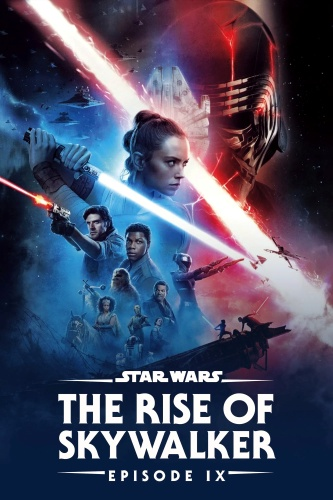

Rise of Skywalker: The Final Episode of the Final Trilogy
Initial reactions
Everyone who watched the trailer probably remembers Palpatine's laugh in the darkness. It was just (excuse my french) a cherry turd on top of the poop pile that was The Last Jedi. There are so many issues that I have with Palpatine's return. For one, it completely trivializes Darth Vader/Anakin's sacrifice for his son in RotJ, the turning point of the movies and the best part. Anakin overcomes his fear, his anger, and his hate through love for his son, and sacrifices himself, throwing himself in front of the force lightning from Palpatine in order to save Luke. But wait! Actually Palpatine didn't die... somehow....?
After Watching
Rey is my least favorite part of this film. She's a Palpatine somehow, there's a will they/won't they with Kylo, a death scene at the end where they revive each other and kiss randomly, random lightning from Rey's hand (which I refuse to believe is hereditary), a skill that took Count Dooku years to master. The worst part is that not only does she bury Luke and Leia's lightsabers at the end for some reason, she then dramatically calls herself a 'Skywalker'. How does that make sense?